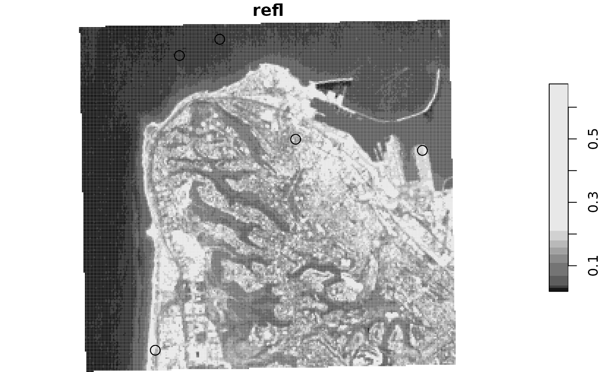

Extract raster values by lines or polygons, summarizing for each feature using a function specified by the user. This function is aimed to reproduce (some of) the functionality of raster::extract.
extract2(x, v, fun, progress = TRUE, ...)A stars object
An sf layer that determines values to extract
A function to summarize cell values per feature/band
Display progress bar? The default is TRUE
Further arguments passed to fun
A vector (single-band raster) or matrix (multi-band raster) with the extracted and summarized values
# Polygons
pol = st_bbox(landsat)
pol = st_as_sfc(pol)
set.seed(1)
pol = st_sample(pol, 5)
pol = st_buffer(pol, 100)
pol = c(pol, pol)
# Plot
plot(landsat[,,,1,drop=TRUE], reset = FALSE)
plot(pol, add = TRUE)

# Single-band raster
aggregate(landsat[,,,1,drop=TRUE], pol, mean, na.rm = TRUE)[[1]] ## Duplicated areas get 'NA'
#> [1] 0.03313243 0.03240556 0.15517222 0.20104000 0.21759063 NA
#> [7] NA NA NA NA
extract2(landsat[,,,1,drop=TRUE], pol, mean, na.rm = TRUE, progress = FALSE)
#> [1] 0.03313243 0.03240556 0.15517222 0.20104000 0.21759063 0.03313243
#> [7] 0.03240556 0.15517222 0.20104000 0.21759063
# Multi-band example
extract2(landsat, pol, mean, na.rm = TRUE, progress = FALSE)
#> [,1] [,2] [,3]
#> [1,] 0.03313243 0.05402703 0.06128378
#> [2,] 0.03240556 0.05107500 0.06068611
#> [3,] 0.15517222 0.14351111 0.11841389
#> [4,] 0.20104000 0.17108286 0.14104000
#> [5,] 0.21759063 0.18261563 0.13955938
#> [6,] 0.03313243 0.05402703 0.06128378
#> [7,] 0.03240556 0.05107500 0.06068611
#> [8,] 0.15517222 0.14351111 0.11841389
#> [9,] 0.20104000 0.17108286 0.14104000
#> [10,] 0.21759063 0.18261563 0.13955938
# Lines
lines = st_cast(pol, "LINESTRING")
# Single-band raster
extract2(landsat[,,,1,drop=TRUE], lines, mean, na.rm = TRUE, progress = FALSE)
#> [1] 0.03325417 0.03225556 0.15913214 0.18650000 0.22911429 0.03325417
#> [7] 0.03225556 0.15913214 0.18650000 0.22911429
# Multi-band example
extract2(landsat, lines, mean, na.rm = TRUE, progress = FALSE)
#> [,1] [,2] [,3]
#> [1,] 0.03325417 0.05382917 0.06127917
#> [2,] 0.03225556 0.05079630 0.06030370
#> [3,] 0.15913214 0.14481786 0.11824643
#> [4,] 0.18650000 0.16249600 0.13460000
#> [5,] 0.22911429 0.19283929 0.14493571
#> [6,] 0.03325417 0.05382917 0.06127917
#> [7,] 0.03225556 0.05079630 0.06030370
#> [8,] 0.15913214 0.14481786 0.11824643
#> [9,] 0.18650000 0.16249600 0.13460000
#> [10,] 0.22911429 0.19283929 0.14493571